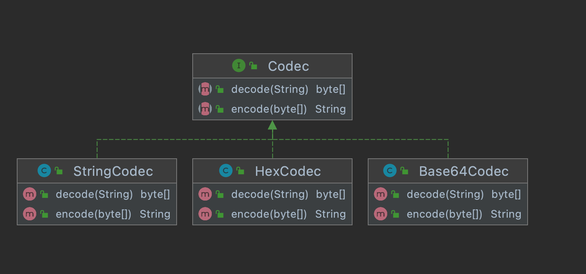
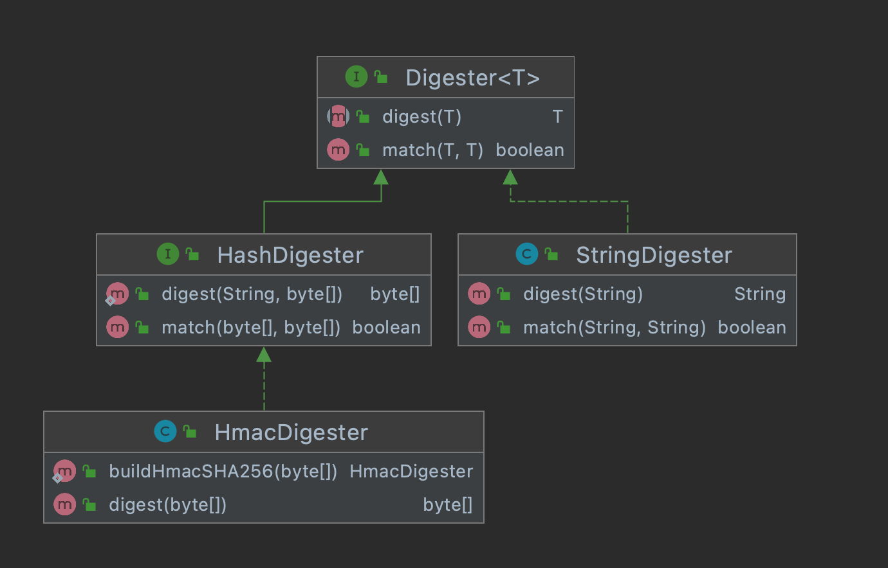
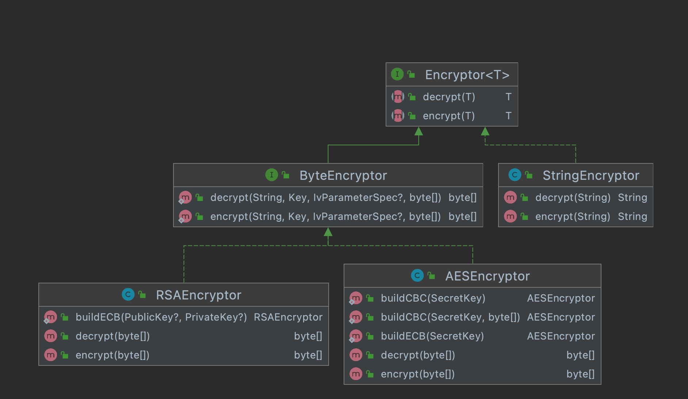

工作原理
主要解释工作原理，具体用法可参考单元测试。
1. 编解码（Codec）
编解码器在二进制数组和人类可读的字符串之间转换，用于避免传输中出现乱码。
-
编码：二进制数组转换为字符串；
-
解码：字符串转换为二进制数组。

Figure 1. Codec
已测试实现包括：CHARSET_UTF8、HEX 和 BASE64。
2. 消息认证码（MAC）
因为消息认证码目前主要的实现为哈希消息认证码，所以没有单独抽象该接口，直接将 HMAC 实现到了消息摘要者中。如果认证码还有非哈希的实现方式，则考虑重新规划消息认证码接口。
3. 消息摘要（MessageDigest）
消息摘要者可获取消息的摘要，用于消息验证。输入称为消息，输出称为摘要。

Figure 2. Digester
已测试实现包括：MD5、SHA256、SHA512 和 HmacSHA256。
4. 加解密（Encryption）
加解密器可加密和解密消息，消息分为明文和密文。

Figure 3. Encryptor
已测试实现包括：AES/ECB/PKCS5Padding、AES/CBC/PKCS5Padding、RSA/ECB/PKCS1Padding。
| 在 Padding 方面，PKCS5 和 PKCS7 在规范上有区别，但 Java 实现上是等效的，即使用 PKCS5 实现了 PKCS7。 在 IV 方面，CBC 模式支持静态 IV 和动态 IV，动态 IV 会将生成的 IV 追加在密钥的末尾。 |